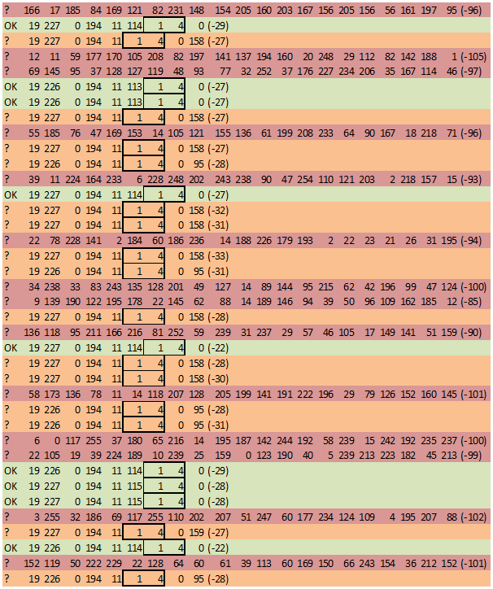
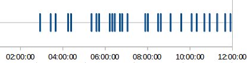
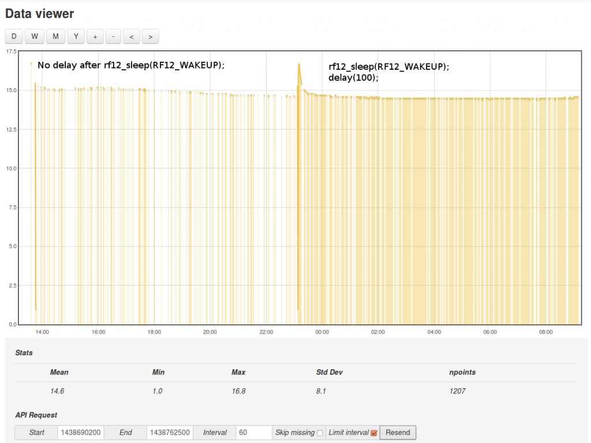
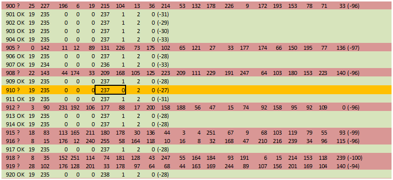

I have just taken delivery of two new EmonTH with the DHT22 inside but the input on my Raspberry Pi (preloaded sd card) isn't receiving new data every 60 seconds as in the specs of the TH.
Infact, sometimes I get no new data for 10 minutes on 1, 2 minutes on the other, sometimes 60 seconds.... It seems completely random from both of them.
Is there a reason for this? I have put them in the same room as the pi to rule out range, but I am still experiencing random behaviour.
Re: emonTH Unreliable reading timing?
Are they both transmitting at the same time and blocking one another? Is there another (unrelated) transmitter on the same band nearby that's causing interference that's blocking them?
Re: emonTH Unreliable reading timing?
How would I tell if they are transmitting at the same time?
They both have different node ID's as well. The only other 433 transmitter is the emonTX.
Re: emonTH Unreliable reading timing?
Plenty of this in the logs:
2015-07-30 20:16:11,493 DEBUG RFM2Pi Discarding RX frame 'unreliable content'? 0 2 80 95 2 104 120 190 228 208 90 166 71 107 147 49 87 38 60 144 46 (-98) 2015-07-30 20:16:13,012 DEBUG RFM2Pi Discarding RX frame 'unreliable content'? 184 47 23 190 235 216 145 18 65 228 11 203 158 131 3 147 186 179 38 56 72 (-101) 2015-07-30 20:16:15,440 DEBUG RFM2Pi Discarding RX frame 'unreliable content'? 42 8 111 65 240 61 60 132 5 28 55 169 82 153 203 60 17 11 4 182 83 (-98)
I am sat here with the serial shell open and emoncms (on the pi) watching it take a read, then emoncms miss it...
Re: emonTH Unreliable reading timing?
All three (emonTx, 2 × emonTH) use the same band and frequency, the Group and Node numbers only work in the software while or after the message is being or has been decoded. So it's quite possible, but unlikely, that all 3 are blocking each other all of the time.
Paul (pb66) is the emonHub expert, hopefully he'll pick this up.
Re: emonTH Unreliable reading timing?
Thanks Robert,
I was wondering if interference from a third party device was causing this so I went around the office and turned everything wireless off. Still got the same result (lots of 'unreliable content' messages in the log and missing readings). So I took it all home with me and sure enough, here now, with just the single emonTH and the pi hub, its still the same.
Re: emonTH Unreliable reading timing?
The "Discarding RX frame 'unreliable content' " message will occur for any frames prefixed with a " ? " as that is the JeeLibs way of denoting a bad packet, looking at those packets the RSSI is very low -98dB and -100dB, that is just noise or some interference in the distance.
Your local devices should clear that by at least 20dB min (-80) but if in the same room you could be looking at -20dB or better.
In emonhub.conf [{RFM2Pi]][[[runtimesettings]]] setting quiet = true will command the RFM2Pi module to not report bad packets.
The group id is actually used as part of the initial crc check so check you are using a consistent group id, 210 is the OEM default and the rfm2pi. emonTx and emonTH would have been pre set to 210 as should emonHub.
tail -f /var/log/emonhub/emonhub.log will be a better way of monitoring the packets passing through emonHub and you may even find it helpful to temporarily reduce the interval on a emonTH while debugging (by uploading a sketch with shorter interval) and powering via the usb programmer (saves battery with the increased frequency and may also give a small voltage boost over battery op)
A crude way of syncing the emonTH's is to insert the batteries in one, wait 30s and fit the batteries in the second, in theory they should tx alternately each 30s but this will probably slip over time.
They are not normally troublesome so I'm also interested to find out the cause.
Paul
Re: emonTH Unreliable reading timing?
Hopefully a silly question - are all the RFM69CW modules the 433 MHz variety? There is a Building Blocks page on identifying which is which.
Re: emonTH Unreliable reading timing?
Ok, I did notice the -99dB as well which made me think it is just background noise. However, when I changed to quiet mode = true in the emonhub.conf (through the gui) it still reported all the unreliable frames?
Re: emonTH Unreliable reading timing?
Ok, so some further troubleshooting and i think i have spotted something. I have increased the read interval on the TH to 0.1 minutes (so 6 seconds). The sensor is about 2 ft away from the RPi and this is the hub log, note the discarded frames with a similar signal strength to the good frames, could this be our failing packets?
I have attached an excerpt of the log, the high signal strength discarded packet seems to happen every couple of readings.
Here is a comparison of some good and bad frames in no particular order:
2015-07-31 08:12:32,461 DEBUG RFM2Pi Discarding RX frame 'unreliable content'? 19 225 0 0 0 1 32 0 135 (-36)
2015-07-31 08:12:34,472 DEBUG RFM2Pi Discarding RX frame 'unreliable content'? 20 243 0 0 0 112 0 0 152 (-29)
2015-07-31 08:12:36,884 DEBUG RFM2Pi Discarding RX frame 'unreliable content'? 20 243 0 0 0 112 0 0 152 (-27)
2015-07-31 08:12:37,189 DEBUG RFM2Pi 1056 NEW FRAME : OK 19 225 0 0 0 144 1 32 0 (-36)
2015-07-31 08:14:44,522 DEBUG RFM2Pi Discarding RX frame 'unreliable content'? 20 238 0 0 0 128 0 0 107 (-31)
2015-07-31 08:16:16,224 DEBUG RFM2Pi 1164 NEW FRAME : OK 19 225 0 0 0 146 1 32 0 (-40)
2015-07-31 08:16:13,844 DEBUG RFM2Pi 1162 NEW FRAME : OK 19 225 0 0 0 146 1 32 0 (-39)
2015-07-31 08:16:56,996 DEBUG RFM2Pi 1187 NEW FRAME : OK 20 236 0 0 0 121 1 0 0 (-27)
Re: emonTH Unreliable reading timing?
Could you try adding a line to the emonTH sketch to eliminate or confirm a possible bit sync issue caused by the string of zero values?
Adding " emonth.temp_external=3010 " at line 282 after the battery voltage reading should to the trick and hardcode a value of 301°c.
Are you currently running of the usb programmer or batteries?
Paul
Re: emonTH Unreliable reading timing?
I will do that now. I was running off the USB programmer, then batteries again if you noticed a strange voltage reading.
Re: emonTH Unreliable reading timing?
Done, but still getting plenty of these:
2015-07-31 09:25:22,540 DEBUG RFM2Pi Discarding RX frame 'unreliable content'? 19 233 0 194 11 145 1 0 43 (-27) 2015-07-31 09:25:24,855 DEBUG RFM2Pi Discarding RX frame 'unreliable content'? 19 233 0 194 11 145 1 0 43 (-31)
Attached is a chunk of log.
Re: emonTH Unreliable reading timing?
To get a better look at the raw data stream from the serial port we should try using a serial console, are you familiar with Minicom? (I hope so it's not the most user friendly SW), I believe it is included on that SDcard image.
You can stop emonHub with sudo service emonhub stop to give minicom exclusive serial port access/control.
can you then provide a longer log from which it should be easier to spot patterns?
sending "1q" or "0q" should enable/disable quite mode and when you do either should get a "currrent configuration" from which you should see the node (15i) group (210g) frequency (@433MHz) and if quite mode is enabled "1q".
I did think the battery voltage of 0.3v was odd and wondered if the results seen where battery or programmer powered.
For the moment I would recommend working with one device to avoid any collisions or confusion, and use the usb lead power (if possible) to give us the best shot of debugging, Although several battery feed devices should work fine in service, debugging can be simpler by eliminating the "other" possible influences, like range etc, you only need one irrelivent result from "another" influence to throwout and mask a pattern.
Paul
Re: emonTH Unreliable reading timing?
Attached is an output of minicom for you. Just to note that I have changed the group ID to 212 on both the Pi and the TH as a troubleshooting step yesterday.
It looks like it is receiving a series of frames from node 19 (the TH) but only 1 in a few is OK.
EDIT: Attached a bigger dump of output as well.
Re: emonTH Unreliable reading timing?
I haven't looked at the second one yey but there is definitely a pattern there, I'm just not sure of the cause yet.

The red lines are too long and too weak so can be excluded. The green are good and the orange should be good, notice the pattern of 1's and 4's, that follow the pass/fail rate 100%, too much of a coincidence to not be related.
Paul
Re: emonTH Unreliable reading timing?
Ok, I have no idea what to look for from here, so hopefully you can spot something.
Re: emonTH Unreliable reading timing?
At the moment I do not know the root cause, the logs suggest a byte is being dropped but that seems very odd,
2 things I would do is a update the rfm2pi firmware to be 100% sure the latest is being used and add a serial print of the emonth typedef struct Payload, the current "debug" prints will output real values and require some decoding/encoding to compare with the RFM2Pi serial stream.
Although on reflection I think the issue must be "in the air" or in the rfm2pi firmware/jeelib, because if the emonTh was sending incorrect data the RFM2Pi wouldn't know that is was wrong as it would pass the crc checks, so I think the RFM2Pi firmware should be updated before we go any further.
This is done directly via the Pi. see the rfm2pi wiki for a how to guide and you can use this updated firmware hex file it was recently compiled in an attempt to resolve a different issue so I know it's up to date.
I will give it some more thought and perhaps someone else may spot something
Paul
Re: emonTH Unreliable reading timing?
Hi Paul, ok done that, firmware updated and attached is an output of minicom. It looks like it is discarding frames a lot less, but I can still see some there.
EDIT:
After watching minicom for quite some time, its doing exactly the same thing.
Re: emonTH Unreliable reading timing?
It would seem either I'm missing something really basic or real can of worms has been opened here!!
I looked a little closer at the raw serial output of an emonTH I have that has not been performing well (dropping packets) and I assumed traffic issues. Turns out it is doing EXACTLY the same byte 5 is missing on many packets.
I can now confirm it is byte 5 "missing" and not a corrupt or out of sync bit count. When I could see the same pattern I added 2 more default values to the emonTH sketch so I have a valid temperture followed by 3 hardcoded value of 3010 to represent ext_temp, humidity and battery. Around half the time I get the expected output and the rest of the time the second 194 (byte 5, the lsb of integer 3030) has been dropped and the frame is rejected by crc
OK 19 220 0 194 11 194 11 194 11 (-32)
OK 19 220 0 194 11 194 11 194 11 (-35)
? 19 220 0 194 11 11 194 11 215 (-33)
? 19 220 0 194 11 11 194 11 215 (-31)
I have tried the latest RFM2Pi firmware and an earlier version. I have also tried the latest RFdemo.12 from JeeLib and an older one I found on my hdd. I have not tried back dating my JeeLib library and recompiling yet.
Any ideas ? anyone ? am I missing something daft?
Paul
Re: emonTH Unreliable reading timing?
Well im glad that when I identify a problem, its a good one... ha ha ha
If i can be of assistance, let me know but you're now beyond me, Im only an IT DC Infrastructure guy! Pretty new to all this microcontroller fun.
Re: emonTH Unreliable reading timing?
What sort of emonTH does everybody have? Mine is a RFμ328 / RFM12B version (1.4). I can give that a try later.
Re: emonTH Unreliable reading timing?
Mines the newer type and I uploaded the 1.5.1 sketch. RFM69CW
Re: emonTH Unreliable reading timing?
Mine is a late (non-RFu) v1.5 RFM69CW emonTH with the latest V1.5.1 firmware too.
I have looked through a significant amount of logging now, and my emonTx's do not do it, the emonTH does it all the time, alot!
Although I'm drawn to the RF12demo/RFM2Pi sketch because its failing the CRC the fact it seems to be consistant with the new emonTH and not occur with other devices makes me think otherwise, this is also possibly why it's only just coming to light, the emonTH has only been around a few months.
Is it possible for the packet to get altered (drop a byte) after the crc is decided but before it is sent?
My findings show of 2500 frames of which 900+ where obvious interference and weak signals etc the remaining ~1360 had ~400 emonTx frames which included a few "bad" packets none of which showed any sign of a missing byte,
Where as of 925 emonTH frames 250 were "bad" all of which had a byte missing, predominantly the 5th (~240 of 250) but the other 10 had either the 4th or the 6th byte missing. very bizzarre but also very consistent.
The attached log is of ~925 emonTH packets sorted so failed are 1st followed by the passed packets.
Paul
Re: emonTH Unreliable reading timing?
Would it be worth trying the non-JeeLib low level calls, taken from the emonTx V3.4 3-phase sketch, to send the data?
Like JeeLib, that works fine for the emonTx V3, and at least you can see exactly what's going on. I've not got a RFM69 emonTH so I can't test it.
Re: emonTH Unreliable reading timing?
I did scout around for an alternative sketch to try on the emonTH but there seems to only be one "RFM69" sketch.
I will look at the low level code option, it sounds sensible I'm just not sure my coding is up to it. which ever method I try it's going to get quite involved I guess and to be honest this may need to wait a bit as I'm already spreading my time too thinly, I certainly won't get near it over the weekend.
Paul
Re: emonTH Unreliable reading timing?
The code is essentially a stripped-down version of the transmit code used by JeeLib (except for a small section borrowed from MartinR). Here are the pertinent lines & functions - I think! I can't test this, so it's quite possible I've missed something. It should be fairly easy to slot in.
Note the maximum useful payload is 60 bytes - JeeLabs are aware of this, I don't know if they've found the cause, but it fails if this is exceeded.
Re: emonTH Unreliable reading timing?
What actually is the 5th byte? I was playing around uploading to emoncms and noticed an extra value come into my inputs that Im not expecting in my hub config.
Screenshots attached. You can see in my emonhub config I am naming 4 values, and 4 values is what I get in the nodes section of the local emon on the pi. However when posting out to emoncms.org I have that 5th value coming in.
Re: emonTH Unreliable reading timing?
Robert - I may just create a test sketch by adding a fixed payload that mimics the emonTH in size to the low-level stuff you have written and try that on both a emonTx and emonTH, then go from there.
Tom - The 5th value you see is the RSSI, the signal strength as a negative dB value is added automatically if you are using a rfm69 based receiver. It is the bracketed value on the end of each packet seen in minicom.
When I refer to the 5th byte I'm referring to the 5th of 8 byte values that make up the data string. The packet seen in minicom is of the format "OK" or " ?" to signify valid or not, the first value after that is the node id the rest is data up to the RSSI. 8 "byte" values of 0-255 are expected 4 integers.
Paul
Re: emonTH Unreliable reading timing?
I don't know what this is worth, but I've been running my rfμ emonTH for some hours now. While there are many missing readings (27 in about 10 hours - and there's no pattern nor regularity visible) there isn't a single "Discarding" in the log.
(I'm not sure what version of emonHub I've got here though - emonhub.py is dated May 8.)
Re: emonTH Unreliable reading timing?
Paul,
If you do as you suggest, and there's no problem (because there's nothing in those code snips to put anything to sleep), I'd be looking at how the 328 and the RFM69 are put to sleep and wake up again - this problem has the smell of a timing/power-up race issue about it.
Re: emonTH Unreliable reading timing?
Although I'm not currently on this (just, taking a teabreak from catching up on the gardening) my current "feeling" is that it most probably definitely maybe the sketch, as the emonTH is just a "arduino" type device with a rfm69 attached, at the and of the day, it shouldn't perform any different to an emonTx etc, but that is just a feeling!
27 in 10 hrs at 60per hour (assuming default settings) is less than 5% and possibly in line with the (uncounted) packets I deleted from the logs that were obviously wrong, genuinely corrupted or incomplete packets. The "pattern" was easily spotted and I have just focused on those for now.
5% is probably considered acceptable, although I prefer the terms expected or tolerated :-)
pre "emon-pi" or "original" emonHub versions have not altered much at all, so you should be good, besides this issue is very much before emonHub gets the data.
Paul
Re: emonTH Unreliable reading timing?
So are we leaning towards a potential sleep issue in the TH sketch?
Re: emonTH Unreliable reading timing?
The error pattern(s) shown above can happen if the byte-level Tx buffer handling is temporarily stalling - the buffer underrun will have the effect of putting the last correct byte on the air twice.
Something odd happening in the interrupt world?
Re: emonTH Unreliable reading timing?
Could be...
That I don't see it with an RFμ emonTH does tend to suggest that it's tied in with JeeLib and the RFM69.
I've got no proof that it is a sleep problem, it's just that weird things like this tend to be a consequence of timing problems, and those could be sleep-related. A lot of things are turned off in the sketch to save battery current, and I'd be looking at the order in which they come back, and how long each requires to stabilise - stuff like that. But as most (if not all) of that is common to the '69 and the RFμ versions, it's not that per se, but more likely a secondary effect.
It could be a power supply problem, because at the default max power, the RFM69 draws a big chunk of current, which might just be screwing something up. (The LL code: it's only matter of changing one register value to set the power, and it's commented.)
Here's the "pattern" of my missing data - I can't see a pattern, it looks pretty random to me.
Recording started at 02:15 and stopped at 11:55.
Re: emonTH Unreliable reading timing?
" ...will have the effect of putting the last correct byte on the air twice"
I think we are losing a byte rather than gaining(duplicating) a byte because there is 3 sets of "194 11" expected but when ever there are consecutive 11's (or occasionally 194's) there is an 'unknown' value tagged on the end before the RSSI, if we were gaining a value every packet would end on 194 rather than the expected 11. This can be easily proven by changing the 2nd and 3rd hardcoded integers.
I have not seen any pattern in the occurrence either, that seems random and the number affected can vary too. The numbers I supplied above show around ~20% invalid with the same "byte missing" characteristics but the first short run I did there were slightly more invalid than valid ie on the wrong side of 50% invalid.
It has since dawned on me I am comparing the success rate against rfm12 emonTx's running variants of MartinR's sketch which doesn't use JeeLib,. not that I think that's relative, but it's clear I need to do some more tests with other sketches on both a rfm69 emonTx v3.4 and emonTH.1.5 for a better picture.
Paul
Re: emonTH Unreliable reading timing?
"It could be a power supply problem" hopefully we ruled that out by powering via a usb programmer, but I will confirm further with a good 5v supply.
Does the emonTx discrete sampling sketch use the same sleep regime ? Is it worth sticking some batteries in a emonTx v3.4 and not connecting an AC/AC supply to see how it copes ?
Paul
Re: emonTH Unreliable reading timing?
"Does the emonTx discrete sampling sketch use the same sleep regime ? "
Broadly, yes, but I can see that the TH does some additional things - hence the finger pointed in that direction. I think batteries in an emonTx would not help, because I know it can fall over when on the ac supply if the RFM69 is run at full power and the supply is only a little below the UK nominal voltage. And when that happens, it goes through a complete reset sequence. I haven't tried it when sending to an emonPi to see exactly what is logged, but I'd have thought that the transmission would be abruptly truncated, and the subsequent reset would have showed up there.
"I am comparing the success rate against rfm12 emonTx's running variants of MartinR's sketch which doesn't use JeeLib"
The part of my LL function that handles the passing of the data into the TX register (i.e. the part where a byte might get lost!) is MartinR's logic, everything surrounding that small part is essentially JeeLib - without all the options. So it might be relevant after all?
Re: emonTH Unreliable reading timing?
I think I've got to the bottom of this now.
The issue seems to be that the rfm69 needs a bit of time to wake up, by inserting a 0.1 sec delay ( dodelay(100); ) immediately after the rf12_sleep(RF12_WAKEUP); on line312 I no longer get any bytes dropped even running at a 2 sec interval.
A 2 sec interval is the result of reducing the interval to "0.1 minutes", the "const int time_between_readings = 0.1" will not provide the desired 6secs, it has basically created a zero delay and only the hardcoded 2sec wait for the DHT22 and a 100ms pause has provided an interval of 2.1s.
So I replaced that whole block L323 - L330 with dodelay(time_between_readings); since it replicates the dodelay() function immediately below it and set time_between_readings = 3800 (2.2s + an additional 3.8s = 6s),
This can be returned to a calculation from minutes but IMO seconds would be more appropriate and it should also be calculated just once at compile time using a define rather than in every loop, it should factor in the 2.2sec too, so the user gets the interval defined.
Tom - could you test this please, you should be able to use a stock sketch with the one delay line added after the wake-up.
If this fixes the issue I will tidy it up and submit a pull request.
Robert - I'm not entirely sure what I did wrong with the code you supplied, I added the absolute minimum to test and it made a very effective "jammer" completely wiping out all my device traffic the whole time it was powered, I didn't try debugging but I have attached a copy for your perusal/amusement :-)
Paul
Re: emonTH Unreliable reading timing?
I have left this ticking over for a while and just checked the results, of ~1600 emonTH packets 11 were invalid and all of them were obviously invalid, none had any common values or were of a similar length.
Paul
Re: emonTH Unreliable reading timing?
Paul,
There was from me no delay in loop( ) so transmission would have been practically continuous, so a very thorough jamming of the band was to be expected. But 6 seconds should have been enough. I don't quite see why it hung on (if indeed it did). What hardware was it on?
Re: emonTH Unreliable reading timing?
Hi Paul,
I will update the sketch on my two TH's first thing in the morning when I get to the office and let you know how it goes.
Re: emonTH Unreliable reading timing?
Ok, I am running the sketch with the delay line in, at 2.1sec intervals and am capturing a minicom session. I will look at it after a while and post it up here as well.
EDIT: Attached is my minicom output. From my quick analysis it looks good now, much much much better.
Re: emonTH Unreliable reading timing?
Had it back on 1 min intervals now for a few hours and it seems to be working fine.
Re: emonTH Unreliable reading timing?
excellent!
Re: emonTH Unreliable reading timing?
Hmm, the gross packet incorrect filling has certainly gone away, but I'm puzzled by the following sorted minicom extract:
OK 19 235 0 0 0 253 1 2 0 (-28)
OK 19 235 0 0 0 2 2 2 0 (-28)
OK 19 235 0 0 0 2 2 2 0 (-32)
OK 19 235 0 0 0 2 2 2 0 (-28)
OK 19 235 0 0 0 3 2 2 0 (-32)
? 19 235 0 0 0 237 0 2 0 (-27)
The sort was to find any errant ID 19 packets, then looking for good 19 235 packets for comparison.
Just one packet, same dB range, first fields ok. 253 to 237 is a single dropped bit in the middle of that byte. This could
easilybe explained by a narrow noise blip in the channel. Then possibly another glitch at the end of the next byte at a stretch.The puzzling issue are the four packets that fell out of the sort for 19, 235. Is that 2/3, 2, 2,0 pattern reasonable payload? - perhaps entirely my ignorance about what gets stuffed into a normal packet.
Re: emonTH Unreliable reading timing?
I hadn't gotten around to checking Tom's latest logs yet. I suspect the run of zeros is causing the same sync problem found with Ian's "emonTH Unreliable reading timing?" issue, which was my first suspicion but introducing the fixed value didn't impact the results at the time.
The emonTH payload is 4 integers temp1 temp2 humidity battery, (all are scaled x10) In this "stock?" example with a DHT22 fitted, temp2 (bytes 3 and 4 of data) is unused Unless temperature exceeds 25.5°C the 2nd byte will remain 0 too and the maximum byte 2 can ever reach is 4 due to a 125.0°C cap.
I will take a look and run some more tests locally here. Although IMO the temp sensor circuits should all use "Temp sensor circuit error codes" so I proposed a "standard" for consideration.
Paul
PS byte 7 and 8 are ~ 2 & 0 as Tom is powering from a programmer rather than batteries so the 0.2v is probably residue voltage or noise seen by the ADC ?
Re: emonTH Unreliable reading timing?
@Paul,
Ok, that makes sense - the RH is hovering around 50% which due to the encoding looks like odd dramatic changes of byte 5. The decoded values look sensible with slow rates of change. This just leaves the single packet corrupted packet, correctly caught by the CRC.
The remainder are true noise packets - low signal strength and random contents. I have a potential fix for these that requires a library rebuild on the Rx side if you have time to dig further.
Re: emonTH Unreliable reading timing?
Ah, you beat me to it, I just came to post my findings, which concur with your own. the roll over at ~51% humidity is shown by the box on the attached png and I too only found 1 unexplained packet that was rejected by crs every thing else appears as expected.
Although I'm interested in your fix I'm not sure there would be any significant gain from any "improvement" for Tom, setting silent will remove all the noise packets and the loss of one good packet isn't the end of the world I guess. The only way to tell is to count the packets over a prolonged period to determine the fail rate and to see if any packets are entirely missing (by calculating from send frequency) due to being blocked by the noise but I would think that was unlikely, I'm game if Tom is, although he may not be geared up to compile and install FW to the rfm2pi, that normally involves having a GUI arduino IDE on the same machine as the GPIO. unless you can compile a hex file for him to install with avrdude.
Paul
Re: emonTH Unreliable reading timing?
Hi Paul,
Nice work!
I can start X and stick the Arduino IDE on the Pi if you need me to. Or if someone compiles the firmware I can shove it on with avrdude.
Re: emonTH Unreliable reading timing?
Cool, lets see what emjay prefers,
Paul
Re: emonTH Unreliable reading timing?
Reading this post with interest, also noticing similar drop in reading reliability with rfm69 emonTH and have been trying to debug a system that we sent out that I think this may be a contributor too, although I think there is something else there too that is causing readings to drop off for hours. Perhaps a combination of this and a high radio noise environment..?
I setup a test system yesterday and ran it with standard firmware until just after 11pm, then added in the 100ms delay. Recording the a temperature feed from the emonth with the phpfina engine and an interval of 60s and then using the emoncms data viewer with skip missing unticked and the interval in the request set to 60s you can see the missing packets clearly and there's a noticeable improvement in reliability after adding the 100ms delay!
Il try reducing the delay a bit to save power next to see how short it can be without reducing the reliability.

Re: emonTH Unreliable reading timing?
Hi Trystan - can you post a minicom log of the rfm2pi output with silent off?
This has proved the most enlightening method of debugging, If you have multiple devices you could also try changing the emonTH sketch to a different group which will allow you to change group at minicom to view just the emonTH this reduces clashes for testing and is easier on the eye when digesting the data.
The "run of zero's" could also be causing a sync issue and viewing via a feed could be adding to the percieved issue, It has been proven on another thread just using a phptimeseries as the first log to feed yield a much higher datapoint count than a fixed interval.
Using the emonTH alone for a set timed period and using excel for analysis of the minicom log is the only sure way to establish an accurate emonTH send rate currently.
Paul
Re: emonTH Unreliable reading timing?
Checking my own logs this morning I found a couple of anomalies and went back to the 1 "unexplained" packet in Toms last results. losing a single packet isn't significant, but it's values actually reveal a recognizable pattern.

On the whole the packet is within scope, correctly formatted and plenty strong enough to be read above the noise floor. We can be pretty sure the humidity didn't dip from 49.3% to 23.7% and back to 49.3% in 12 seconds (and if it did, I don't think the DHT22 could keep up) so I suspect one of 2 things could of occurred
1) the preceding "run of zeros" caused a sync issue in the reciever, which only manifested from 3/4 of the way into the 5th byte so the humidity should be 49.2%.
2) The 100ms delay is border line and the DHT22 value was incomplete when read.
Either will be hard to detect in any quantity but if the use of zero's for unused temp sensors is removed and Trystans delay tests reveal a clear result (eg if stable at 50ms then 100ms is definitely not the cause, or if a reduction negatively effects stability perhaps we need to extend the delay) we may be able to improve the results further without the need for more indepth tests.
Wouldn't it be more efficient on the battery to wake the rfm69 earlier in the routine and then do something else rather than use a delay, if it's possible ?
Paul
Re: emonTH Unreliable reading timing?
Great thanks Paul, I've got minicom setup and logging to a file, will post up the results soon. Setting the delay to 20ms looks promising so far... by looking at the data viewer, but dont want to jump to conclusions yet..
Good idea about waking the rfm69 earlier in the routine. The last time I measured the power consumption for the emontx with the rfm69 asleep vs initialized and awake I didnt measure a difference. It used 8.4mA. The power consumption only jumped up if data was being sent (34-44mA) or rf12_recvDone() was being called (~23 mA). Measurements include atmega power consumption. Which would suggest negating the need to call sleep, maybe I should double check those measurements..
Re: emonTH Unreliable reading timing?
@Paul,
Analyzing that corrupted packet is rather speculative, but assuming the 'BAT' reading is 2 as reported, then there is unlikely to be a bit synch problem, just a bit decode error in byte 6. At these very high S/N ratios, a single bit error is also unlikely unless there was a very short RF noise spike in that bit decode window.
Doing some stats on more than a sample of one would be nice ! ;-)
Re: emonTH Unreliable reading timing?
I haven't been able to shed much more light on this yet. I did the test with a 20ms delay and minicom for 2 hours and 48 minutes which with a 100% success rate would be 168 packets. 161 "OK 19 " packets where received and there was a lot of noise packets:
? 19 146 145 237 47 87 57 89 43 153 203 32 144 174 198 128 28 201 163 255 196 (-104)
? 19 135 156 70 217 76 27 31 9 240 191 194 222 129 149 86 151 88 219 66 64 (-104)
OK 19 148 0 0 0 36 3 30 0 (-48)
? 19 25 101 1 97 138 224 50 135 60 43 91 7 254 78 90 116 219 203 242 176 (-101)
? 19 88 118 8 101 179 203 202 208 88 70 247 254 55 143 44 216 126 198 243 28 (-105)
OK 19 149 0 0 0 37 3 30 0 (-48)
OK 19 149 0 0 0 37 3 31 0 (-48)
I didn't receive any packets with "? 19 " that appeared to be anything other than noise.
Re: emonTH Unreliable reading timing?
The "set interval" in the emonTH sketches are "1" minute, there is a 2 second "dodelay()" prior to the DHT22 reading and a couple of minor pauses AND the time taken to execute. The result is the nett interval is a minimum of 62+ seconds and depends on whether you have debug enabled and an external temp sensor.
2hrs 48m is 168*60 = 10080 seconds / 161 "OK 19" packets = 62.6 second interval average, which I would say was probally spot on.
I had intended to reorganise the timing as described earlier in this thread to, calculate the existing delay depending on what is discovered (and the #defines) from that calculate the balance required to achieve the desired interval (specified by the user in seconds rather than minutes) once only in the setup() rather in each loop, the only time the interval would change is when a sensor is added/removed or debug selected none of which should happen in normal running.
Paul
Re: emonTH Unreliable reading timing?
A little more data both in attached txt and graph screenshot, this is with no delay and full sleep mode. Im in Manchester today so this is also a different location.
There are 24 valid packets all together, both recorded with emonhub and visible in the end on the emoncms graph, I've enabled graph points so that it shows all the received datapoints.
There are 13 non-valid packets all together that are of the right form and with valid rssi.
Re: emonTH Unreliable reading timing?
@Paul, just a thought if you plan to reorganize the delay mechanisms. If the lag is acceptable, how about overlapping the DHT22 delay with the packet send by saving those readings to send out in the next packet? Might save a few micro-coulombs at the expense of slower response to ambient. If trends are the concern, then perhaps this is acceptable.
Without any fresh data streams to look at, I've gone back to the pre-delay sets. Something is not hanging together with the current idea that the RFM69 is not ready fast enough when transitioning from SLEEP mode. The FIFO can be loaded up while in SLEEP mode and surely it would be the first byte or so that was failing, not consistently further down the packet.
Since the FIFO loading is a simple code loop, there must be something happening 'behind the scenes' for this to fail i.e. an interrupt-time issue. The event can be bracketed - it happens after n SPI transactions from taking the radio out of sleep and it is masked by introducing that arbitrary delay (i.e currently < 20ms). TxReady popping up after crystal oscillator/PLL start up delay from sleep?
Re: emonTH Unreliable reading timing?
The interval between each of the emonhub.log messages is ~62s which confirms the interval spacing discussed above.
Of the 37, 24 are correct and passed to emoncms, the remaining 12 are made up of 2 overlapping groups (of which 3 packets belong to both)
There are 9 correctly formatted but have invalid data (in boxes on attached image),
8all of those I'm confident would be fixed with the RFM wake up delay,the 9th (in bright red) is an odd case and may be related to the single "unexplained", similar but not the same packet discussed a couple of posts back.There are 7 (in orange) that appear to be prefixed with, or rather attached to the end of a "-> ack", emonhub recognizes the "->" as a confirmation message and will log and discard that frame. The "confirmed sent packet size" message is not generic enough to accurately include acks as it was written for the glcd time and packetgen type transmission commands from emonhub. The wording needs to be changed, but more importantly the concatenation of that reply and the next payload must be separated by a new line and I believe that will be an issue in the RFM2Pi sketch.
Paul
EDIT -new image attached, the one I marked in red previously wasn't a special case! not sure why I thought it was now I look at it again ???)
Re: emonTH Unreliable reading timing?
@emjay - just spotted your post after I posted, I would hope the delay can be incorperated into a more efficient routine. The DHT22 "delay" is actually a " Sleepy::loseSomeTime(2000)" so it's not actually awake during that particular "delay" thare are some options but I won't invest too much time into it until we are sure of the time needed and if any other items should be factored in, plus I'll wait to see if Tyrstan plans any changes rather than us both doing different things.
You could be write that the core of the issue is something else, I only assume it's the rfm not waking in time because adding the delay where it is has a 99.99% cure rate.
Paul
Re: emonTH Unreliable reading timing?
More data. I have 3x emonth nodes here.
node 19: standard emonth rfm69 firmware without any delay but full sleep mode.
node 20: standard emonth rfm69 minus rfm wake/sleep calls all together
node 21: very basic rfm69 + dht22 code without any sleeping, should be the same as 20.
Result summary for node 19
166 lines all together.
7 missing packets
37 discarded frames
27 confirmed sent packet size: -> ack
166 - 7 - 37 - 27 = 95
~93 in graph between 10:00 and 12:45
Result summary for node 20
142 lines all together.
9 missing packets
27 packets with "confirmed sent packet size: -> ack"
142 - 9 - 27 = 106
~105 in graph
Result summary for node 21
143 lines all together.
7 missing packets
23 packets with "confirmed sent packet size: -> ack"
143 - 7 - 23 = 113
112 datapoints between 10:58 and 13:21 in graph
edit: name of emonth_sleep_20_nonoise.txt should be emonth_nosleep_20_nonoise.txt
Re: emonTH Unreliable reading timing?
The "confirmed sent packet size: -> ack" might be my fault with the modified emonpi firmware code i made to run these tests as the default firmware does not print any of the ? packets. Il check that
Re: emonTH Unreliable reading timing?
@ Trystan what HW & SW are you debuging?
I just checked and the urrent RFM2Pi (rfm12) & RFM2Pi (rfm69) both have new lines started immediatly after the print "-> ack", only the emonPi sketch appears different (omitted?), I cannot see a new line created there.
Paul
Re: emonTH Unreliable reading timing?
Hardware is emonpi + 3x emonth all rfm69. Software for nodes is as described above. Yes not sure why it doesnt have a new line. But re-uploading the default emonpi firmware which doesnt print corrupt packets does not print any "confirmed sent packet size: -> ack"
This is my current RF_Rx_Handle() function, now with added newline:
boolean RF_Rx_Handle(){
if (rf12_recvDone()) { // if RF Packet is received
byte n = rf12_len;
if (rf12_crc == 0) {
Serial.print("OK");
} else {
Serial.print("?");
if (n>20) n = 20;
}
Serial.print(" "); // Print RF packet to serial in struct format
Serial.print(rf12_hdr & 0x1F); // Extract and print node ID
Serial.print(" ");
for (byte i = 0; i < n; ++i) {
Serial.print((word)rf12_data[i]);
Serial.print(' ');
}
#if RF69_COMPAT
// display RSSI value after packet data e.g (-xx)
Serial.print("(");
Serial.print(-(RF69::rssi>>1));
Serial.print(")");
#endif
Serial.println();
if (RF12_WANTS_ACK==1) {
Serial.println(" -> ack");
rf12_sendStart(RF12_ACK_REPLY, 0, 0);
}
if (rf12_crc==0) return(1); else return(0);
} //end recDone
}
Re: emonTH Unreliable reading timing?
I have only looked at the node 19 log so far and there are only 2 "missing" datapoints 5 of the 7 you counted just jump a minuit eg from 1m 59s to 3m 1s would be only an interval of 1m 2s there is not a missing datapoint, This is however possibly the "logic" behind the missing datapoints in a phpfiwa feed as there will be intervals with 0 updates.
The nett count is the same, just less "missing" !
166161 -72 - 37 - 27 = 95 so ~93 in graph between 10:00 and 12:45 isn't bad and there are only 2 stray datapoints in 161 so 1.24% didn't make it to the emonPi from 19.Paul
Re: emonTH Unreliable reading timing?
node 20 has 5 of 138 (3.6%) 'missing' = 106 vs 105 in graph
node 21 has 7 of 143 (4.9%) "missing" = 111 vs 112 so is in line there too.
So it appears the "well rested" rfm69 performs significantly better than one that is always awake, go figure??
This is based on a relatively small dataset and it probably isn't the fact the rfm69 is "rested" but there is clearly a big difference ie improvement allowing the rfm to snooze between duties.
Could it be that freshly awoken there is no pending stack of received data to discard? and it starts with a clean slate?
Paul
Re: emonTH Unreliable reading timing?
@Trystan, small aside - if that send ACK path is followed, isn't rf12_crc then modified?
Re: emonTH Unreliable reading timing?
I'm off on holiday today until the 14th, to the isle of eigg and rum :) so I'm not going to get a chance to delve into this further until then, would like to run a series of tests with different delay sizes 10,20,50,100ms to see how much is needed. I'd say we need more data maybe a few days at least to tell the difference between some of these changes..
Re: emonTH Unreliable reading timing?
I'm just doing a parallel test with 2 EmonTh using the pulse sketch
One with sleep commented out, other with delay as follows
rf12_sleep(RF12_WAKEUP);
delay(100);
rf12_sendNow(0, &emonth, sizeof emonth);
I'll try 2hr periods with 100ms, 20ms and no delay, and compare them with the one with no sleeping.
Re: emonTH Unreliable reading timing?
So it appears the "well rested" rfm69 performs significantly better than one that is always awake, go figure??
Hi Paul,
Your comment reminded me of a parameter used in packet radio Terminal Node Controllers.
Even if the RFM module is fully awake and in receive mode, is the module getting enough "delay" to allow the transmitter to "fully ramp up" before the data stream gets fed to it?
Comparativly speaking, with a TNC, the required delay was huge - on the order of 225-250 milliseconds. With that particular hardware, if the transmitter delay was set just a few (~5-10) mS too small, problems similar to the ones described in this thread ensued.
Re: emonTH Unreliable reading timing?
Just updating you guys to say that my two emonTH's have now been running for a few days without a problem using the added 100ms delay.
Re: emonTH Unreliable reading timing?
I did the test with both test nodes down the garden. Range 20m from Pi, and going through stone walls. (they are simply counting +1 on every rf send)
The graphs are with 'skip missing' un-ticked. Not sure how conclusive it is? I guess I need to repeat it. There seems no great difference between 100 and 20ms delay as compared to the control above it The wake-up with no delay looks a bit worse than the no-sleep control.
Is it worth seeing what 10 or 5ms look like?
Re: emonTH Unreliable reading timing?
@John,
Interesting results. If we speculate that there are at least two packet failure mechanisms, then the graphics are the OR of the effects. This is supported by the similarities reading vertically in a particular time zone and that other results have shown that the 100 ms delay almost completely masks the buffer-stuffing error.
For example, the 15:00 - 17:30 pattern similar losses even with 100 ms delay with the lower. This suggests a strong? interferer in the channel around that period. Similarly, the 18:30 - 21:30 shows extra errors adding in (as expected) in the 'no delay' graphic.
A mincom style log would be very useful - this may well show a flood of spurious packets during the "noisy" periods with probably distinct and different RSSI values from the expected packets. If the flood is a torrent, the Rx section is blinded to valid packets while it flushes out the spurious junk and gets around to Rx Ready again.
Re: emonTH Unreliable reading timing?
@Bill - I'm not clear on the root cause as my understanding of RFM's and JeeLib isn't great at that level, It was Roberts "sleep" pointers that led me to systematically test each sleep related part of the sketch and tuned into this particular part. I only know the effect of the delay fixes the issue But not really why.
@Tom - Good to hear, thanks for finding the bug, I'm sure there will be a updated sketch soon and hopefully that will also address the interval between packets not being as defined too.
@John - thanks for the input, What type of feed are you using? if using a fixed interval the results will not be totally accurate, I notice you are using the "pulse" sketch and having took a look at it I cannot be sure it would be affected by as the issue consistently manifests itself as "dropping" either the 5th or 6th byte of a 8 byte payload, these are provided by the rather slow acting DHT22 which isn't present in the sketch you are using plus it only has a 6 byte payload.
If you have a couple of DHT22's and want to do some "rfm69 wakeup delay duration tests" we can mod a sketch or if you are trying to debug the "missing" datapoints you're seeing then I would recommend running a phptimeseries feed as the very first feed on that input and either way take a look at the packets in minicom, the serial stream holds many more answers, is more accurate and can be debugged in excel.
If you can provide us with a log of the packets from minicom I will take a look, perhaps we should confirm if the issue occurs without a DHT22 and/or related to packet size too. I will try and run some tests for that too.
Paul
Re: emonTH Unreliable reading timing?
Hi emjay - I started writing that last post sometime ago and hadn't noticed your post til now.
How we view the data is definitely playing a big part, viewing the data in minicom is the only accurate method currently, the fixed interval feeds in emoncms are amplifying the errors as they seem to test if there has been a update in the last 60s and this can be let down by server loading, network performance and also the fact the sketches are not sending a packet "within" 60sec window, if we are licky every 60 sec window might receive an update but since they are sent on an interval greater than 60s it cannot occur every 60s window.
I even suspect the occasional valid packet is going astray as I am comparing the phptimeseries too, (that feed engine is not fixed interval, it just records the time and value of datapoint.
Going back to Trystan's logs there could be yet another issue in play there that cannot be seen in the emonhub logs, I'm trying to figure out why only some of the packets are appended to an "-> ack", we know there should be a new line but why are there just a handful of them? I would of though there would be as many "-> ack" frames as there is frames received (although they wouldn't be paired up as each ack is prepended to the next packet, good or bad)
I notice your wording "almost completely masks the buffer-stuffing error" rather than helps, alleviates, fixes or improves the issue etc, do you know the real cause? is there a better way to address this?
Paul
Re: emonTH Unreliable reading timing?
Much of this is beyond my understanding, but I see its better to test with DTH22's so I have re-configured with DTH22s. so far i have one with 50ms delay after the wakeup command, other has no delay.... delay (50); line commented out.
I dont know about minicom.
What useful tests can I do simply looking at the feed graphs (I am using fixed period with averaging).
From a casual look at update rates, there is no difference between the 2 (50ms delay and 0 delay). however I am seeing times up to 8 mins (with pulse it rarely went over 60 secs)
For this application (room temperature), we don't really need mind lots of missed packets BUT Pete had observed no data for 24hrs. How is this possible?
Any suggestions re what tests I should continue with? I was trying at 20+m range and through a stone wall. I thought it useful to test it near the range limit, but I guess if I'm too near the edge of range, the results could be less valid.
Re: emonTH Unreliable reading timing?
Just stepping back a bit. When Pete set up several nodes, we observed on more than one occasion that several nodes stopped together at about the same time, but some kept logging. e.g. I remember looking down the inputs to see some updating, but maybe 3 showing the same time (e.g.20mins, or 3 hrs). I cannot be totally certain that this was not due to Pete moving the nodes further away, but it happened several times. Is it possible that something on the receiving end in the Pi is causing the problem. I am struggling to get my head around the fact that we saw last update times of 18hrs on several nodes, but they all recovered after resetting just one of the nodes. Furthermore, I have not managed to replicate very long periods of drop-out here. This has only been observed in Pete's office.
I'll do some further tests if anyone can suggest what I should do.
As i said, we should be able to tolerate lots of drop-outs for room temperature monitoring, but we need to avoid what appears to be a lock-up.
many thanks
Re: emonTH Unreliable reading timing?
@Paul,
We just have pointers to the bit-stuffing error so far - occurring several bytes into the FIFO doesn't jibe directly with a "slow" module start up from sleep. The timing is relatively consistent, which suggests an interrupt-level glitch.
This would be confirmed if we see the byte position move forward with a very short delay.
As for a fix, still head-scratching time I'm afraid.
Re: emonTH Unreliable reading timing?
So, I'm seeing no difference on feed update times with 50ms delay after wakeup and no delay. anything worth trying? should I retest with the sleep/wake commands removed?
Re: emonTH Unreliable reading timing?
OK so that we can collect some good data I have thrown together a little python utility to use in place of minicom so that it will do 2 things one is add a timestamp and it also saves to a csv file that can be opened directly by excel (plus I don't find minicom very user friendly).
Example log attached (had to rename ,txt as .csv wouldn't upload) to see what the output is like (ignore the data). the menu stuff at the start of each session can be deleted but I didn't want to start adding filters to remove certain stuff and then we miss some valid data, so this will record everything out of the serial port (unlike emonhub/emoncms) and will record a timestamp (unlike minicom or arduino IDE). It is"one-way" so the group and node settings etc cannot be altered whilst running. once downloaded and settings edited it can be run with one command.
To try it (assuming a Pi emonbase and use rpi-rw 1st if OS is read-only) download with
wget http://openenergymonitor.org/emon/sites/default/files/read_rfm2pi.py_.txt -O ~/read_rfm2pi.py
chmod +x ~/read_rfm2pi.py
The PORT, BAUD, PATH and FILE setting need to be confirmed/set in the script
nano ~/read_rfm2pi.py
As per usual it should have exclusive access to uart so stop emonhub etc first
sudo service emonhub stop
~/read_rfm2pi.py
and ctrl-c will stop recording, emonhub can be started again with sudo service emonhub start, the script is very basic and rough around the edges by it does the job :-)
Posting from these logs will significantly help with tracing issues with the rfm2pi network devices.
Paul
Re: emonTH Unreliable reading timing?
@John - We need to see the characteristics of the issue you are up against, all the feed will show you is it's not right, there isn't any detail and the frequency etc get affected by the fixed interval.
Can you try the script above rather than minicom?
At least then we can determine the nature of the issue(s) you are seeing. The adding of the "wakeup delay" targets one specific issue, we are aware of a possible bit sync issue and there are various other possibilities too.
Paul
Re: emonTH Unreliable reading timing?
@Paul,
Good idea. Could I suggest one change? When the FIFO count gets truncated for n > 20, could the received n value be stuffed into that last position? The actual buffer contents are junk so there is no loss in overwriting one value - the n value is useful though since it indicates how long the Rx section is blocked dealing with the noise packet.
Re: emonTH Unreliable reading timing?
@emjay - That would be useful, however it would need to be written into the receiver sketch rather than this monitor utility, something like this change proposed while looking into Ian's bit sync issue could be added to the receiver sketch without impacting normal use.
EDIT - athough in normal use a >20 not >70 would be used
Re: emonTH Unreliable reading timing?
Hi guys,
Thanks for your help debugging this.
The emonTH coded on GitHub and pre-compiled .hex files have been updated to V1.6 to include a 100ms dodelay immediately after the rf12_sleep(RF12_WAKEUP); on line312
https://github.com/openenergymonitor/emonTH/blob/85e26415214f206dbfd015846ad5ce6cec045c5f/emonTH_DHT22_DS18B20_RFM69CW/emonTH_DHT22_DS18B20_RFM69CW.ino
We will include this update in all new emonTH units.
Re: emonTH Unreliable reading timing?
Hi Glyn, good to see the delay in the sketch, that should reduce that issue significantly,
however the use of "dodelay", a shorter delay or different routine may help minimize the impact of that delay on battery life,
I see you have shortened the main interval to 55 seconds which should be ok as a interim fix to ensure no missing data point are apparent when viewing a graph of a fixed feed etc, but it will it will knock over 8% off battery life and cause wasted packets as many 1min fixed intervals will now receive 2 updates of which one will be ignored,
I have tried a couple of methods to calculate the interval which are very successful with a stable voltage but running on (fresh) batteries yields an interval 0.8s longer than when powered by usb programmer Not that a 0.8s variation is a problem but I wonder how long the interval will become when the batteries are nearly depleted?
Paul
Re: emonTH Unreliable reading timing?
Hi Paul,
I have selected to use 'dodelay' to keep impact on battery life minimal:
https://github.com/openenergymonitor/emonTH/blob/85e26415214f206dbfd015846ad5ce6cec045c5f/emonTH_DHT22_DS18B20_RFM69CW/emonTH_DHT22_DS18B20_RFM69CW.ino#L314
Good point regarding wasted packets, 8% is quite a reduction.
Re: emonTH Unreliable reading timing?
Hi Glyn, I'm not sure that's right still
It looks like Trystan had already added a delay(20) in the correct location (L314)
then you have added a dodelay(100) after the rfm has been put to sleep again (L323)
and the led flash with a dodelay(100) has been uncommented too (L322-324).
The position needs to be L314, a dodelay() will use less power than a delay() and the jurys still out on the duration, but it won't matter so much if the dodelay is used so probally better to be safe with 100ms as I guess an additional 80ms of rfm power is nothing compared to the 100ms of led or the 8% drop in interval duration.
Paul
Re: emonTH Unreliable reading timing?
Much of this is above my understanding, but I have continued with by test. I have one with 50ms delay and one with no delay. delay looks better. Should I try the dodelay? not that I know what that is
Re: emonTH Unreliable reading timing?
Hi John - There are a couple of potential issues in play and to establish which is effecting you we really need to see the serial data. I wrote a helper script to negate the need to use minicom, You can cut and paste the screen data or it also saves to a file that can be easily attached to a comment here. Can you give that a whirl? A guide is included a couple of posts back
we can tell much more from that data than the graphs,
Paul
Re: emonTH Unreliable reading timing?
OK Paul, I will have a look and try it out
Re: emonTH Unreliable reading timing?
Update:
So I now have 4 emonTH's running with the delay line in and they have been spot on up until now.... Now I just switched on my emonTX again and the emonTH's are once again missing every other reading.
EDIT: Another screenshot added. I think I spotted a script in here to log data instead of using minicom. I will run it today and attach some data.
I just had a thought which is that the sampling and transmit frequency of the emonTX might be so fast that the RFM69 on the Pi is too busy sometimes to deal with the emonTH readings?
I will switch the TX off in a minute and see what happens.
Re: emonTH Unreliable reading timing?
@Tom - can you try the script above?
I suspect it may be traffic related and it would be good to see if there is a pattern, The script will give timestamped serial data.
Paul
Re: emonTH Unreliable reading timing?
Paul, I will do, just edited my post above at the same time as you posted.
Re: emonTH Unreliable reading timing?
Ok, I don't think monitoring will be required since I just turned the TX off and instantly all the TH readings are coming in on time. So I guess I should just reduce the transmit frequency of the TX.
Is the timing setting obvious when I look at the sketch or can someone point me in the right direction?
Tom
Re: emonTH Unreliable reading timing?
What does the inputs page show?
The phpfina feeds are ok for recording reliable data but they really aren't any good for debugging this type of issue.
Have you made any interval adjustments to the sketches? if still running a 62 second "send interval" there will also be several "60 second fixed feed" intervals that do not get updated, add that to a couple of packets dropped due to clashes and you could get significant "dry spells".
Paul
Re: emonTH Unreliable reading timing?
Yes it is fairly easy to spot and increasing it most probably will improve things but it's not definitive, is every emonTx transmission successful ? what is the noise floor level compared to the rssi's of the dropped devices?
The length of the emonTx packet is twice as long as it needs to be if you are not using the 6 temp sensors there are provisions for and there is also a known issue that causes those unused values to cause the CRC checks to fail due to a bit sync error, the result of which would be that the receiver is spending too much time partially processing corrupt packets.
Increasing the interval is the same as driving at a lower speed would reduce the chance of an accident when you have bald tyres or something in your eye impairing you vision.
Paul
Re: emonTH Unreliable reading timing?
Good spot Paul. I have not updated Trystan's delay(20) to be dodelay(100) to minimize effect on battery life. We can look at reducing this in the future. This bumps the firmware version to V1.6.1
https://github.com/openenergymonitor/emonTH/commit/ddb06430edfc24e31c46c23c25970ba974797db3
Re: emonTH Unreliable reading timing?
Hi Glyn, I don't think the second dodelay is required, it only delays the spi being diabled after the rfm has already gone to sleep.
And previously the led on, dodelay, off, was commented out is that supposed to still be active?
Paul
Re: emonTH Unreliable reading timing?
So I havn't yet modified the TX's interval, but I have captured some data using your script. It its attached and renamed to a .txt.
Re: emonTH Unreliable reading timing?
I haven't crunched any numbers yet but the 2 things that stand out (other than you are not using a stock emonTx sketch so the redundant temperature values mentioned above are not a problem) are that there is alot of noise in the -80dB to -100dB range and the emonTx signal is in the same region so the signal from the emonTx needs to be improved so it can overcome the noise, if you can get the poorest emonTx rssi above the bulk of the noise it may be possible to change the rssi threshold to -90dB and half the noise or -80dB would be better if the emonTx can be lifted enough. And the interval of the emonTx is only 2.5secs, way too fast for RF with 4 other nodes.
Too reuse my analogy above if you drive at 4x the recommended speed you will have problems regardless of any other issues :-)
Try setting the emonTx to 10 seconds and repositioning either it or the rfm2pi for a better signal,
Paul
Re: emonTH Unreliable reading timing?
Hi Paul thanks for your reply. With regards to the timing. I am using the 3 Phase sketch and the only thing I had to do was calibrate the reading values. I have not ever changed the time to 2.5 seconds, is this already set on the github master?
Re: emonTH Unreliable reading timing?
Hi Tom, I would guess that time was set during some tests and not reverted before being committed, The recommended update interval is generally 10-15s for a emonTx. So I believe line 139 should be 10 not 2 (seconds) but that will undoubtedly give you a ~10.5s interval, If you wish to correct that you could amend L346 to absorb the looptime, in this case ~0.5s something like " delay((TIME_BETWEEN_READINGS*1000)-500); " should help but it's not that precise, not that it needs to be really.
Paul
Re: emonTH Unreliable reading timing?
Ok Paul, I will update the timing to 10 secs when I am back in the office and report back.
Re: emonTH Unreliable reading timing?
Could this issue also be affecting an emonBase from correctly receiving info from a emonTx v3.4? I get a lot of the following:
2015-09-05 04:35:08,827 DEBUG RFM2Pi Discarding RX frame 'unreliable content'? 10 0 0 0 0 0 0 0 0 22 48 0 0 0 0 0 0 0 0 0 0 (-49)
and every once in a while it decodes it correctly:
2015-09-05 04:34:58,273 DEBUG RFM2Pi 24 NEW FRAME : OK 10 0 0 0 0 0 0 0 0 26 48 0 0 0 0 0 0 0 0 0 0 0 0 0 0 (-50)
2015-09-05 04:34:58,295 DEBUG RFM2Pi 24 Timestamp : 1441427698.27
2015-09-05 04:34:58,298 DEBUG RFM2Pi 24 From Node : 10
2015-09-05 04:34:58,310 DEBUG RFM2Pi 24 Values : [0, 0, 0, 0, 123.14, 0, 0, 0, 0, 0, 0, 0]
2015-09-05 04:34:58,313 DEBUG RFM2Pi 24 RSSI : -50
2015-09-05 04:34:58,316 INFO RFM2Pi Publishing: emonhub/rx/10/values 0,0,0,0,123.14,0,0,0,0,0,0,0
2015-09-05 04:34:58,340 DEBUG RFM2Pi 24 adding frame to buffer => [1441427698, 10, 0, 0, 0, 0, 123.14, 0, 0, 0, 0, 0, 0, 0, -50]
2015-09-05 04:34:58,343 DEBUG RFM2Pi 24 Sent to channel' : ToEmonCMS
Re: emonTH Unreliable reading timing?
Packets of the form 10 0 0 0 0 0 0 0 0 22 48 are very similar to the startup test packets send by the emontx and emonth to test that the radio works. If your seeing a lot of these it might be that the emontx is resetting which could be caused if only powering from an ACAC Adapter. What firmware are you running? and do you have external sensors connected? What happens if you add USB power, if it is ACAC only at the moment?
Re: emonTH Unreliable reading timing?
You are correct, it is on ACAC at the moment. I don't have any CTs connected as I don't have those yet, so that is why the power readings are 0. Is that why you think they look like test packets? I don't have any external devices connected, so the ACAC should be okay to power the emonTx. I don't think the emonTx is resetting, because when I watch the red led, I can correlate the flash (1/10seconds) with the packet, either 'unreliable content' or decoded; it never does the fast 10 pulses similar to a powerup. emonTx was just purchased, so I assume firmware is 3.4 hardware with 1.6 firmware.
Let me know if I should start a new thread to help troubleshoot this particular case. Meanwhile, I can still try the USB power if that is still needed.
Re: emonTH Unreliable reading timing?
I have attached a 5min CSV file from python script. It appears that the OK data has an extra QTY 4 "0" (bytes), whereas all the others do not. I find it odd that all the "noise" packets (<-70dbm) are all the same length; must be determined by the code assuming a fixed packet length?
For the packets that are '?' but should be OK, note that the node id is consistently correct (10), the RSSI is solid, the voltage is same as OK packets and in the correct location. and these packets correctly are appearing every 10s. So somehow, my good packets are ending up as these noisy 21 byte packets instead of OK 25byte packets.
Re: emonTH Unreliable reading timing?
Take a look at the Data loss due to RF packets getting corrupted thread, it is more likely that you are seeing that error than this one.
The "other" issue is a bit syncing issue caused by the long run of zero temperture values, in theory the zero CT values could do the same but you appear to be ok there, since the voltage reading is a valid value even on the failed packets, so it is probably the run of 6 zero temps + 1 zero pulse count (112 0's) rather than the 4 zero powers (64 0's).
The (printed) length of a failed packet is truncated at 20byte by code in the receiver (rfm2pi) so we do not know the true length of the failed packets.
To determine if this is the issue you will need to either edit the emonTx sketch to introduce some non-zero values and/or edit the rfm2pi sketch to allow a longer sample of failed packet ie >25 bytes, to see the end of the packet
Do you have a USB programmer?
Paul
Re: emonTH Unreliable reading timing?
Paul,
You're right, my issue is at the other thread. I'll continue there.
Re: emonTH Unreliable reading timing?
I tried Robert code (RFM69_LL.txt) with a prototype (Arduino Nano + RFM69C)... and my Emoncms (Raspberry + RFM69Pi) did receive data without problem.
However, when it was ON, my EmonTX Shield did stop to send data to RFM69Pi (I was able to receive "some" data "sometimes").
Than I did turn OFF my prototype, EmonTX Shield and Raspberry... (full hard reset).
And did turn ON only EmonTX Shield and Raspberry.
Without sucess! It apeears that after this, something did change my RFM69Pi or the Shield.
What I found different...
EmonTX Shield should send: 6 input data + RSSI.
I see input data in minicom like: 13 input + RSSI: OK 5 60 1 103 0 22 0 182 0 125 0 32 0 (-50)
If you remove 1 digit numbers, than I believe that this sould be the correct data.
Any idea what can be happening? What could be modified just running your code from another prototype.
Thanx a lot.